rIdx = FileAttachment("attachments/261015_ca1073_raw/index.csv").csv({typed: true}).then(a => a.map(d => d.자료 === "EPA AQS" ? ({...d, 자료: d.series.endsWith("_o3") ? "EPA AQS · O3" : "EPA AQS · PM2.5"}) : d))
info = FileAttachment("attachments/261015_ca1073_03.json").json()
RC = ({"1": "#eb6834", "0": "#2a78d6", 없음: "#b5b3ab", ink: "#0b0b0b", surface: "#fcfcf7"})
RUNIT = ({에어코리아: "PM2.5 (µg/m³)", "EPA AQS · PM2.5": "PM2.5 (µg/m³)", "EPA AQS · O3": "O3 (ppm)", OpenAQ: "PM2.5 (µg/m³)", WEIS: "DO (mg/L)", USGS: "DO (mg/L)", "기상청 ASOS ①": "기온 (°C)", "기상청 ASOS ②": "기온 (°C)", "NOAA ISD": "기온 (°C)"})
rUnit = d => d.자료 === "EPA AQS" ? (d.series.endsWith("_o3") ? "O3 (ppm)" : "PM2.5 (µg/m³)") : RUNIT[d.자료]
ymd = d => `${d.getUTCFullYear()}-${String(d.getUTCMonth() + 1).padStart(2, "0")}-${String(d.getUTCDate()).padStart(2, "0")}`
dayIndex = (s, d0) => Math.round((Date.parse(s + "T00:00:00Z") - Date.parse(d0 + "T00:00:00Z")) / 864e5)
RLAB = ({"1": "1", "0": "0", ".": "없음"})
fd = x => x instanceof Date ? ymd(x) : String(x)리포트 2 부록
FDecomp 실자료 결과 — 원자료 · 지점마다 (대화형)
제안 문서 (Real_Data_DecompFPCA.docx) 의 자료 여덟 가지에 리포트 1 (vic_elec) 의 절차를 그대로 돌림. 지점은 문서 범위 안의 것을 전부 받았고, 라벨은 문서의 군집화 라벨대로 날마다 하나씩 만듦. 값은 ARI (k-means, k = 2). 설계 — 일평균 최적 문턱 (오라클 — 일평균에 라벨을 보고 고른 가장 좋은 문턱을 그어 가른 결과 · 방법이 아니라 비교 기준) · FPCA (하루 곡선 → B-스플라인 → FPCA) · VMD+MFPCA 등 (분해 → 성분을 느린 변동까지 모두 넣음 (VMD 는 DC 모드, EMD 계열은 마지막 잔차까지) → 보정 → B-스플라인 → MFPCA → k-means — 네 분해 모두 같은 규칙).
1. 원자료 보기
자료 · 지점 · 기간을 고르면 그 기간의 시간 단위 원자료를 그림. 바탕색은 그날의 라벨 (1 · 0, 빈칸은 라벨 없음) — 라벨은 날마다 하나라 하루 (현지 표준시 0 – 24시) 가 한 색. 라벨은 그린 값이 아니라 문서의 기준 (주의보 · AQI · 조류경보 · 유량 · 날씨) 으로 정함 — 예를 들어 에어코리아의 1 은 «그 권역에 주의보 · 경보가 걸친 날» 이라 밤에 내려 이튿날 아침에 풀린 주의보는 이틀이 다 1. 실은 지점 — 작은 자료 (ASOS · OpenAQ · WEIS · ISD) 는 계산한 지점 전부, 큰 자료 (에어코리아 · EPA · USGS) 는 시도 · 주마다 1 · 0 이 가장 고른 지점부터 30곳 (모두 172곳).
고른 기간의 하루 곡선 — 가는 선은 하루, 굵은 선은 라벨마다의 평균.
2. 성능 요약
자료와 라벨
| 자료 | 문서의 라벨 | 판정 규칙 |
|---|---|---|
| 에어코리아 | 대기 정체 · 고농도 미세먼지 주의보 발령일 vs 청정 대기 확산 · 강수일 | 1 = 지점이 속한 권역에 PM2.5 주의보 · 경보가 걸친 날 / 0 = 그 밖의 날 중 그 권역의 PM2.5 예보 (당일 최종 발표) 가 «좋음» 이거나 가장 가까운 ASOS 일강수 ≥ 1 mm 인 날 |
| EPA AQS | AQI USG 이상 vs Good · Moderate | 1 = 카운티 일 AQI ≥ 101 이고 그날 AQI 를 정한 물질이 이 지점의 물질인 날 / 0 = 카운티 일 AQI 가 Good · Moderate 인 날 |
| OpenAQ | (라벨 없음) | LA: EPA 규칙 (LA 카운티 · PM2.5) / 서울 종로구: 에어코리아 규칙 |
| WEIS | 조류경보제 발령 기간 vs 평상시 정상일 | 1 = 대응하는 조류경보 지점에 경보 (관심 이상) 가 걸린 날 / 0 = 경보가 아님이 확인된 날 (모든 달). 대응하는 경보 지점이 없는 곳은 라벨 없음 |
| USGS | 강우 유출 · 홍수 유입일 vs 기저 유출 평수기 | 일유량 Q 를 Lyne–Hollick 필터 (α 0.925, 앞 · 뒤 · 앞) 로 기저 유출과 직접 유출 D 로 나눔. 1 = D / Q ≥ 0.5 인 날 / 0 = D / Q ≤ 0.1 이고 Q 가 지점의 P25 – P75 안인 날 |
| 기상청 ASOS ① | 폭염 · 열대야 발생일 vs 비폭염 정상일 | 1 = 기상청 공식 폭염일 (일최고 ≥ 33 °C) 또는 열대야일 (18:01 – 익일 09:00 최저 ≥ 25 °C) / 0 = 둘 다 아닌 날 |
| 기상청 ASOS ② | 청명일 (맑음) vs 강우 · 운량 8 이상 흐린 날 | 1 = 일강수 ≥ 0.1 mm 이거나 일평균 전운량 ≥ 8 인 날 / 0 = 일평균 전운량 0 – 5 (기상청 하늘상태 «맑음») 이고 강수 보고가 없는 날 |
| NOAA ISD | 고온 건조 기후일 vs 한랭 전선 통과 · 강수일 | 1 = 강수 ≥ 1 mm 이거나 한랭 전선이 지난 날 (일평균 기온이 전날보다 5 °C 이상 내리고 일평균 해면기압이 3 hPa 이상 오름) / 0 = 강수 0 이고 일최고 ≥ 지점 P75 · 일평균 습도 ≤ 지점 중앙값인 날 |
자료마다 평균
- 계산한 지점의 평균 ARI. 빨강 = 줄에서 가장 높은 값 (0.2 넘을 때). 지점마다의 값과 지도는 아래 «지점마다».
| 자료 | 계산한 지점 | 일평균 최적 문턱 (오라클) | FPCA | VMD+MFPCA | CEEMDAN+MFPCA | EEMD+MFPCA | EMD+MFPCA |
|---|---|---|---|---|---|---|---|
| 에어코리아 | 655 | \(\color{red}{0.796}\) | 0.512 | 0.515 | 0.518 | 0.525 | 0.500 |
| EPA AQS · PM2.5 | 384 | \(\color{red}{0.801}\) | 0.130 | 0.144 | 0.142 | 0.142 | 0.119 |
| EPA AQS · O3 | 431 | \(\color{red}{0.440}\) | 0.027 | 0.033 | 0.028 | 0.038 | 0.032 |
| OpenAQ | 2 | \(\color{red}{0.878}\) | 0.419 | 0.480 | 0.480 | 0.480 | 0.480 |
| WEIS | 9 | 0.163 | 0.064 | 0.039 | 0.030 | 0.042 | 0.032 |
| USGS | 549 | \(\color{red}{0.214}\) | 0.095 | 0.082 | 0.074 | 0.089 | 0.076 |
| 기상청 ASOS ① | 7 | \(\color{red}{0.798}\) | 0.059 | 0.086 | 0.061 | 0.051 | 0.048 |
| 기상청 ASOS ② | 7 | 0.066 | 0.192 | 0.190 | 0.194 | 0.180 | 0.160 |
| NOAA ISD | 57 | \(\color{red}{0.504}\) | 0.253 | 0.239 | 0.129 | 0.271 | 0.177 |
| 전체 | 2,101 | \(\color{red}{0.559}\) | 0.222 | 0.223 | 0.217 | 0.230 | 0.210 |
분포 — 지점이 많은 자료
| 일평균 최적 문턱 (오라클) | FPCA | VMD+MFPCA | CEEMDAN+MFPCA | EEMD+MFPCA | EMD+MFPCA | |
|---|---|---|---|---|---|---|
| 평균 | \(\color{red}{0.796}\) | 0.512 | 0.515 | 0.518 | 0.525 | 0.500 |
| 중앙값 | \(\color{red}{0.801}\) | 0.695 | 0.690 | 0.688 | 0.694 | 0.680 |
| 아래 25% | \(\color{red}{0.764}\) | 0.057 | 0.062 | 0.076 | 0.090 | 0.060 |
| 위 25% | \(\color{red}{0.835}\) | 0.761 | 0.760 | 0.760 | 0.761 | 0.753 |
| 1등 지점 수 | 633 | 12 | 18 | 17 | 21 | 14 |
| 1등 지점 수 (오라클 빼고) | — | 240 | 188 | 184 | 202 | 176 |
| 일평균 최적 문턱 (오라클) | FPCA | VMD+MFPCA | CEEMDAN+MFPCA | EEMD+MFPCA | EMD+MFPCA | |
|---|---|---|---|---|---|---|
| 평균 | \(\color{red}{0.801}\) | 0.130 | 0.144 | 0.142 | 0.142 | 0.119 |
| 중앙값 | \(\color{red}{0.875}\) | 0.035 | 0.031 | 0.033 | 0.034 | 0.025 |
| 아래 25% | \(\color{red}{0.665}\) | 0.010 | 0.010 | 0.011 | 0.010 | 0.007 |
| 위 25% | \(\color{red}{1.000}\) | 0.170 | 0.174 | 0.180 | 0.165 | 0.141 |
| 1등 지점 수 | 384 | 3 | 4 | 4 | 6 | 5 |
| 1등 지점 수 (오라클 빼고) | — | 142 | 99 | 96 | 103 | 89 |
| 일평균 최적 문턱 (오라클) | FPCA | VMD+MFPCA | CEEMDAN+MFPCA | EEMD+MFPCA | EMD+MFPCA | |
|---|---|---|---|---|---|---|
| 평균 | \(\color{red}{0.440}\) | 0.027 | 0.033 | 0.028 | 0.038 | 0.032 |
| 중앙값 | \(\color{red}{0.437}\) | 0.002 | 0.002 | 0.001 | 0.005 | 0.003 |
| 아래 25% | \(\color{red}{0.300}\) | -0.001 | -0.001 | -0.001 | -0.000 | -0.001 |
| 위 25% | \(\color{red}{0.569}\) | 0.015 | 0.016 | 0.013 | 0.025 | 0.021 |
| 1등 지점 수 | 420 | 1 | 4 | 2 | 3 | 1 |
| 1등 지점 수 (오라클 빼고) | — | 69 | 57 | 63 | 172 | 121 |
| 일평균 최적 문턱 (오라클) | FPCA | VMD+MFPCA | CEEMDAN+MFPCA | EEMD+MFPCA | EMD+MFPCA | |
|---|---|---|---|---|---|---|
| 평균 | \(\color{red}{0.214}\) | 0.095 | 0.082 | 0.074 | 0.089 | 0.076 |
| 중앙값 | 0.173 | 0.028 | 0.019 | 0.017 | 0.022 | 0.024 |
| 아래 25% | 0.085 | 0.000 | -0.002 | -0.002 | 0.000 | -0.001 |
| 위 25% | \(\color{red}{0.307}\) | 0.117 | 0.096 | 0.083 | 0.113 | 0.088 |
| 1등 지점 수 | 431 | 34 | 22 | 18 | 42 | 28 |
| 1등 지점 수 (오라클 빼고) | — | 124 | 115 | 114 | 138 | 145 |
| 일평균 최적 문턱 (오라클) | FPCA | VMD+MFPCA | CEEMDAN+MFPCA | EEMD+MFPCA | EMD+MFPCA | |
|---|---|---|---|---|---|---|
| 평균 | \(\color{red}{0.504}\) | 0.253 | 0.239 | 0.129 | 0.271 | 0.177 |
| 중앙값 | \(\color{red}{0.401}\) | 0.097 | 0.086 | 0.029 | 0.092 | 0.059 |
| 아래 25% | \(\color{red}{0.341}\) | 0.039 | 0.027 | -0.001 | 0.036 | -0.002 |
| 위 25% | \(\color{red}{0.651}\) | 0.324 | 0.322 | 0.104 | 0.452 | 0.151 |
| 1등 지점 수 | 50 | 2 | 2 | 2 | 5 | 1 |
| 1등 지점 수 (오라클 빼고) | — | 6 | 7 | 23 | 18 | 11 |
- 1등 지점 수: 지점마다 여섯 설계 중 가장 높은 것을 셈 (같으면 모두에 하나씩). «오라클 빼고» 는 나머지 다섯 중에서.
지점마다
문서의 라벨 (1 vs 0) 로 지점마다 따로 군집. 받은 지점 2,410곳 중 2,101곳에서 ARI 를 냄 — 못 낸 곳은 라벨 부족 (쓴 날 10일 미만이거나 한쪽 라벨만) · 자료 없음 (관측 2점 미만). 지도에서 속이 빈 점이 못 낸 지점.
3. 보정 성분 이후 결과
리포트 1 §5.1 그림 꼴을 실자료에 그림 — 줄마다 한 분해 방법 (VMD · CEEMDAN · EEMD · EMD), 칸은 왼쪽부터 원곡선 · 보정 성분 넷 (1 · 2 · 3 · 4+ cycles/day — 느린 변동은 1 cycle/day 칸에 들어감, 괄호는 칸 에너지 비율) · MFPCA 점수 (참 라벨) · k-means (k = 2, MFPCA 점수) 군집과 ARI. 자료마다 1 · 0 이 가장 고른 지점 하나 (둘 중 적은 쪽의 날 수가 가장 많은 곳). 모든 지점의 ARI 는 2절 «지점마다».
- 색 — 0은 빨강 · 1은 파랑 (RdBu, 맨 윗줄 범례는 0/1과 자료 파일의 라벨 이름·날 수). 군집 1 · 2도 RdBu이며 군집 번호는 참 라벨 번호와 별개.
수지 (경기도) — PM2.5 · 1 «주의보» 77일 / 0 «청정 · 강수» 812일 · ARI — 일평균 최적 문턱 (오라클) 0.808 · FPCA 0.719 · VMD+MFPCA 0.723 · CEEMDAN+MFPCA 0.725 · EEMD+MFPCA 0.701 · EMD+MFPCA 0.710


Clovis-Villa (California / Fresno, CA) — PM2.5 · 1 «AQI USG 이상» 92일 / 0 «Good · Moderate» 1353일 · ARI — 일평균 최적 문턱 (오라클) 0.674 · FPCA 0.407 · VMD+MFPCA 0.350 · CEEMDAN+MFPCA 0.345 · EEMD+MFPCA 0.362 · EMD+MFPCA 0.364


Redlands (California / Riverside-San Bernardino-Ontario, CA) — O3 · 1 «AQI USG 이상» 579일 / 0 «Good · Moderate» 1136일 · ARI — 일평균 최적 문턱 (오라클) 0.582 · FPCA 0.655 · VMD+MFPCA 0.631 · CEEMDAN+MFPCA 0.694 · EEMD+MFPCA 0.657 · EMD+MFPCA 0.718


Los Angeles – N. Main (California / Los Angeles-Long Beach-Anaheim, CA) — PM2.5 · 1 «AQI USG 이상» 24일 / 0 «Good · Moderate» 436일 · ARI — 일평균 최적 문턱 (오라클) 0.903 · FPCA 0.203 · VMD+MFPCA 0.203 · CEEMDAN+MFPCA 0.203 · EEMD+MFPCA 0.203 · EMD+MFPCA 0.203


칠서 (경상남도 · 낙동강 수계) — DO · 1 «조류경보» 417일 / 0 «평상시» 581일 · ARI — 일평균 최적 문턱 (오라클) 0.060 · FPCA 0.045 · VMD+MFPCA 0.041 · CEEMDAN+MFPCA 0.048 · EEMD+MFPCA 0.048 · EMD+MFPCA 0.043


SOUTH RIVER AT FORREST PARK ROAD, AT ATLANTA, GA (Georgia (GA) · Atlanta-Sandy Springs-Roswell, GA 대도시권) — DO · 1 «강우 유출 · 홍수 유입» 368일 / 0 «기저 유출 평수기» 384일 · ARI — 일평균 최적 문턱 (오라클) 0.103 · FPCA 0.077 · VMD+MFPCA 0.088 · CEEMDAN+MFPCA -0.000 · EEMD+MFPCA 0.086 · EMD+MFPCA -0.000


대구 (대구광역시) — 기온 · 1 «폭염 · 열대야» 226일 / 0 «비폭염» 1598일 · ARI — 일평균 최적 문턱 (오라클) 0.801 · FPCA 0.082 · VMD+MFPCA 0.099 · CEEMDAN+MFPCA 0.095 · EEMD+MFPCA 0.072 · EMD+MFPCA 0.079


광주 (전남광주통합특별시) — 기온 · 1 «강우 · 흐림» 699일 / 0 «맑음» 688일 · ARI — 일평균 최적 문턱 (오라클) 0.032 · FPCA 0.125 · VMD+MFPCA 0.128 · CEEMDAN+MFPCA 0.125 · EEMD+MFPCA 0.136 · EMD+MFPCA 0.092


Portland International (OR / Portland-Vancouver-Hillsboro, OR-WA) — 기온 · 1 «한랭 전선 · 강수» 548일 / 0 «고온 건조» 373일 · ARI — 일평균 최적 문턱 (오라클) 0.874 · FPCA 0.927 · VMD+MFPCA 0.940 · CEEMDAN+MFPCA -0.008 · EEMD+MFPCA 0.915 · EMD+MFPCA -0.015
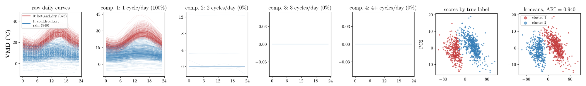
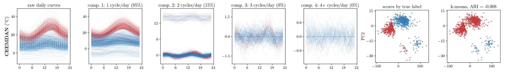
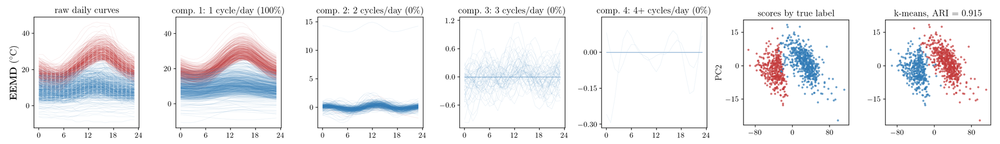
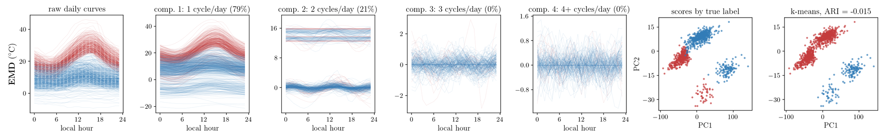
4. 어블레이션
- 자료마다 계산한 지점에서 날 · 라벨 · 분해 결과를 그대로 두고 분해+MFPCA 의 부품을 한 번에 하나씩 바꿈. 값은 평균 ARI, 괄호는 «그대로» 대비 평균 차. 빨강 = 열마다 가장 높은 값.
| 바꾼 것 | VMD | CEEMDAN | EEMD | EMD |
|---|---|---|---|---|
| 그대로 | 0.515 | 0.518 | 0.525 | 0.500 |
| 분해 끄기 | 0.512 (-0.003) | 0.512 (-0.006) | 0.512 (-0.013) | 0.512 (+0.012) |
| 재배치 끄기 | 0.437 (-0.078) | 0.045 (-0.473) | 0.065 (-0.461) | 0.037 (-0.463) |
| 칸 가중치 끄기 | 0.514 (-0.001) | 0.499 (-0.019) | 0.527 (+0.002) | 0.489 (-0.011) |
| 자르기 끄기 | 0.515 (-0.000) | 0.517 (-0.001) | 0.525 (-0.001) | 0.512 (+0.013) |
| 표준화 끄기 | \(\color{red}{0.596}\) (+0.081) | \(\color{red}{0.594}\) (+0.076) | \(\color{red}{0.596}\) (+0.071) | 0.566 (+0.067) |
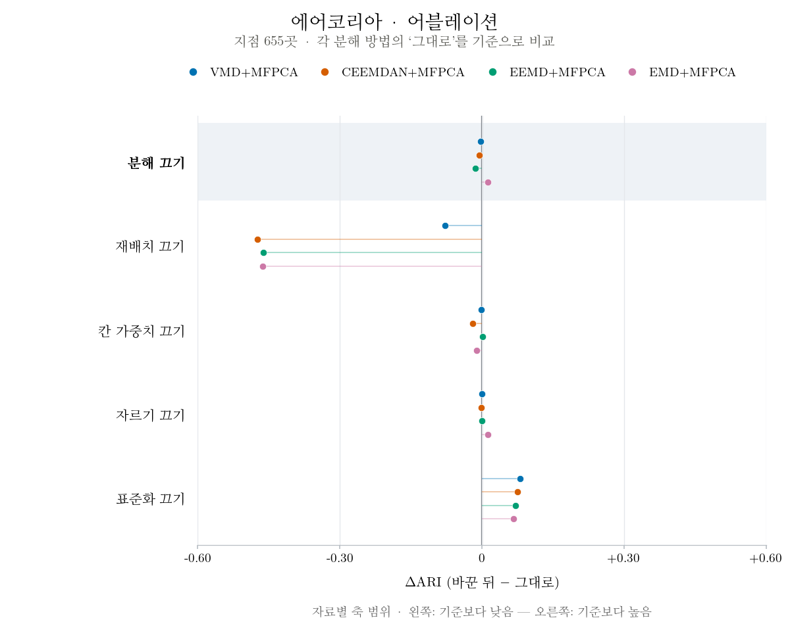
| 바꾼 것 | VMD | CEEMDAN | EEMD | EMD |
|---|---|---|---|---|
| 그대로 | 0.144 | 0.142 | 0.142 | 0.119 |
| 분해 끄기 | 0.130 (-0.013) | 0.130 (-0.011) | 0.130 (-0.011) | 0.130 (+0.012) |
| 재배치 끄기 | 0.137 (-0.007) | 0.048 (-0.093) | 0.072 (-0.069) | 0.059 (-0.059) |
| 칸 가중치 끄기 | 0.146 (+0.003) | 0.130 (-0.011) | 0.145 (+0.003) | 0.109 (-0.009) |
| 자르기 끄기 | 0.145 (+0.001) | 0.146 (+0.004) | 0.142 (-0.000) | 0.131 (+0.012) |
| 표준화 끄기 | 0.157 (+0.013) | \(\color{red}{0.167}\) (+0.025) | \(\color{red}{0.168}\) (+0.026) | 0.148 (+0.030) |
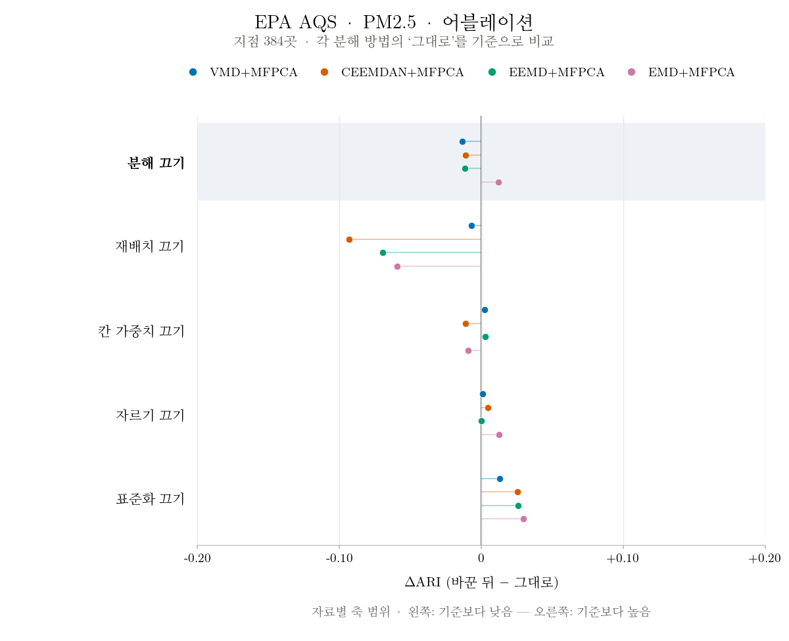
| 바꾼 것 | VMD | CEEMDAN | EEMD | EMD |
|---|---|---|---|---|
| 그대로 | 0.033 | 0.028 | 0.038 | 0.032 |
| 분해 끄기 | 0.027 (-0.007) | 0.027 (-0.001) | 0.027 (-0.012) | 0.027 (-0.005) |
| 재배치 끄기 | 0.035 (+0.001) | 0.027 (-0.002) | \(\color{red}{0.058}\) (+0.019) | 0.026 (-0.006) |
| 칸 가중치 끄기 | 0.034 (+0.000) | 0.025 (-0.003) | 0.038 (-0.000) | 0.031 (-0.001) |
| 자르기 끄기 | 0.033 (+0.000) | 0.028 (+0.000) | 0.037 (-0.002) | 0.033 (+0.001) |
| 표준화 끄기 | 0.037 (+0.004) | \(\color{red}{0.036}\) (+0.008) | 0.042 (+0.004) | 0.039 (+0.007) |
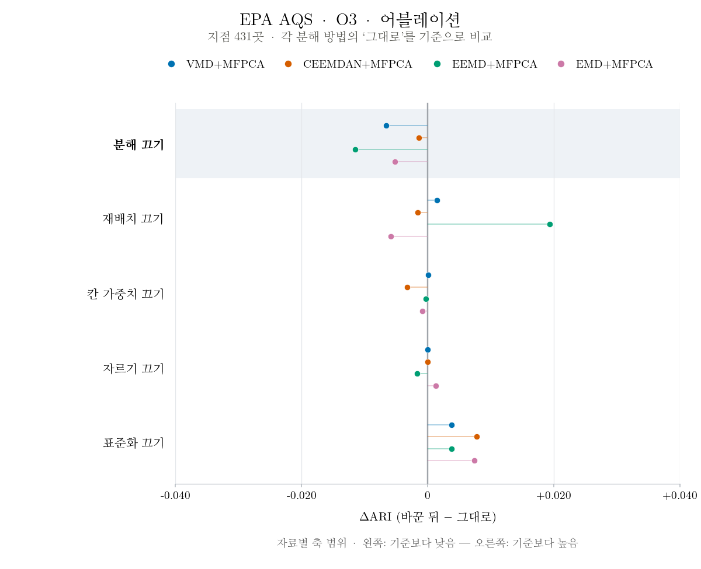
| 바꾼 것 | VMD | CEEMDAN | EEMD | EMD |
|---|---|---|---|---|
| 그대로 | 0.480 | 0.480 | 0.480 | 0.480 |
| 분해 끄기 | 0.419 (-0.061) | 0.419 (-0.061) | 0.419 (-0.061) | 0.419 (-0.061) |
| 재배치 끄기 | 0.098 (-0.382) | 0.154 (-0.326) | -0.025 (-0.505) | -0.013 (-0.493) |
| 칸 가중치 끄기 | 0.631 (+0.151) | 0.415 (-0.065) | 0.621 (+0.141) | 0.480 (+0.000) |
| 자르기 끄기 | 0.480 (+0.000) | 0.480 (+0.000) | 0.480 (+0.000) | 0.480 (+0.000) |
| 표준화 끄기 | \(\color{red}{0.810}\) (+0.330) | \(\color{red}{0.806}\) (+0.326) | \(\color{red}{0.815}\) (+0.335) | \(\color{red}{0.537}\) (+0.057) |
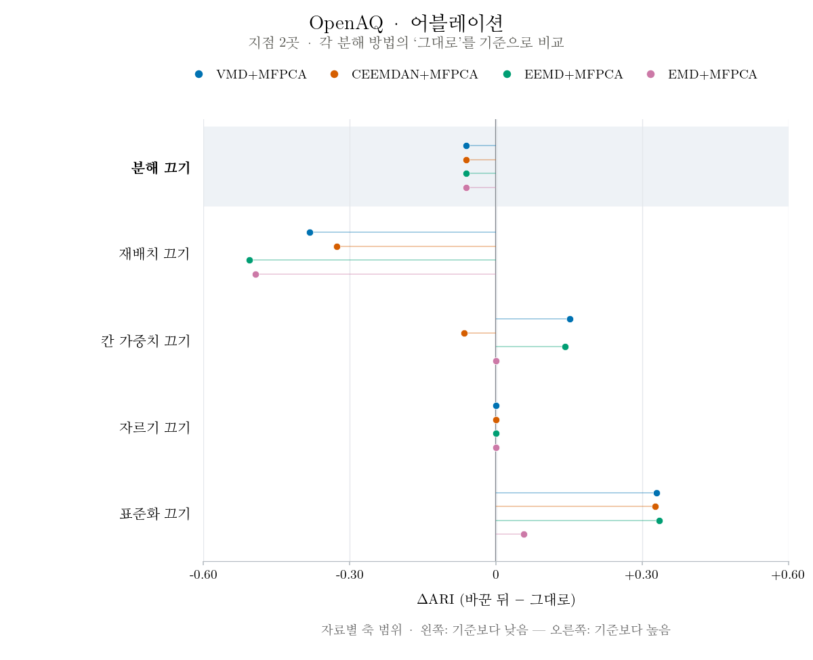
| 바꾼 것 | VMD | CEEMDAN | EEMD | EMD |
|---|---|---|---|---|
| 그대로 | 0.039 | 0.030 | 0.042 | 0.032 |
| 분해 끄기 | 0.064 (+0.026) | 0.064 (+0.034) | 0.064 (+0.022) | 0.064 (+0.032) |
| 재배치 끄기 | 0.030 (-0.008) | 0.059 (+0.030) | 0.023 (-0.019) | 0.025 (-0.007) |
| 칸 가중치 끄기 | 0.025 (-0.013) | 0.026 (-0.004) | 0.042 (+0.000) | 0.032 (+0.000) |
| 자르기 끄기 | 0.038 (-0.000) | 0.030 (-0.000) | 0.036 (-0.006) | 0.038 (+0.006) |
| 표준화 끄기 | 0.033 (-0.006) | 0.032 (+0.002) | 0.032 (-0.010) | 0.038 (+0.006) |
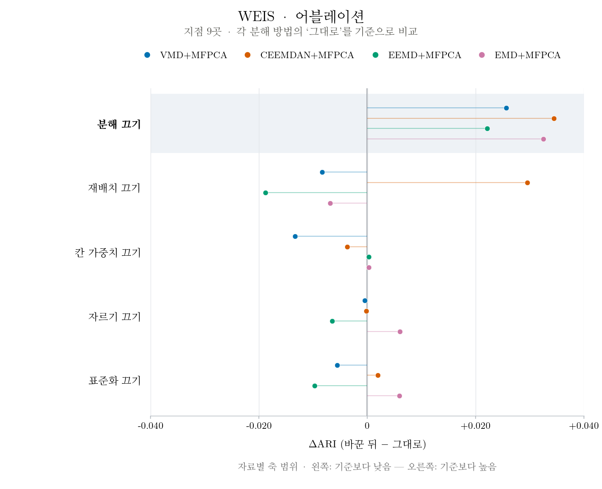
| 바꾼 것 | VMD | CEEMDAN | EEMD | EMD |
|---|---|---|---|---|
| 그대로 | 0.082 | 0.074 | 0.089 | 0.076 |
| 분해 끄기 | 0.095 (+0.012) | 0.095 (+0.021) | 0.095 (+0.005) | 0.095 (+0.018) |
| 재배치 끄기 | 0.088 (+0.006) | 0.061 (-0.013) | 0.049 (-0.040) | 0.038 (-0.039) |
| 칸 가중치 끄기 | 0.073 (-0.009) | 0.071 (-0.003) | 0.088 (-0.002) | 0.077 (+0.001) |
| 자르기 끄기 | 0.083 (+0.001) | 0.073 (-0.001) | 0.090 (+0.001) | 0.075 (-0.001) |
| 표준화 끄기 | 0.068 (-0.014) | 0.066 (-0.007) | 0.073 (-0.016) | 0.064 (-0.012) |
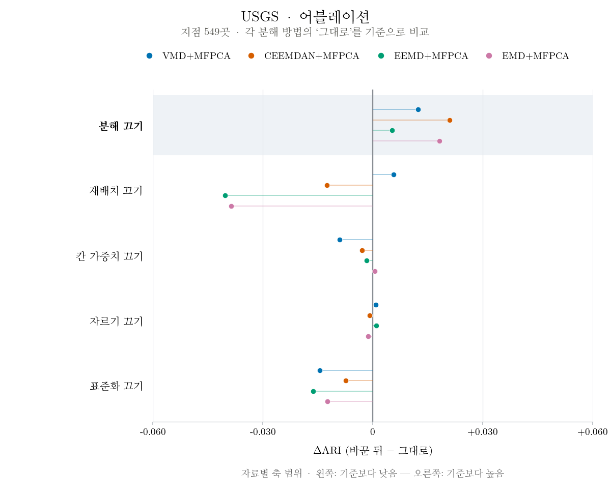
| 바꾼 것 | VMD | CEEMDAN | EEMD | EMD |
|---|---|---|---|---|
| 그대로 | \(\color{red}{0.086}\) | \(\color{red}{0.061}\) | 0.051 | 0.048 |
| 분해 끄기 | 0.059 (-0.027) | 0.059 (-0.002) | 0.059 (+0.008) | \(\color{red}{0.059}\) (+0.011) |
| 재배치 끄기 | 0.038 (-0.048) | -0.003 (-0.064) | -0.013 (-0.064) | -0.010 (-0.058) |
| 칸 가중치 끄기 | 0.032 (-0.055) | 0.032 (-0.028) | 0.017 (-0.034) | 0.043 (-0.005) |
| 자르기 끄기 | 0.086 (-0.001) | 0.060 (-0.000) | \(\color{red}{0.065}\) (+0.015) | 0.051 (+0.003) |
| 표준화 끄기 | -0.004 (-0.090) | -0.003 (-0.063) | -0.002 (-0.053) | -0.001 (-0.049) |
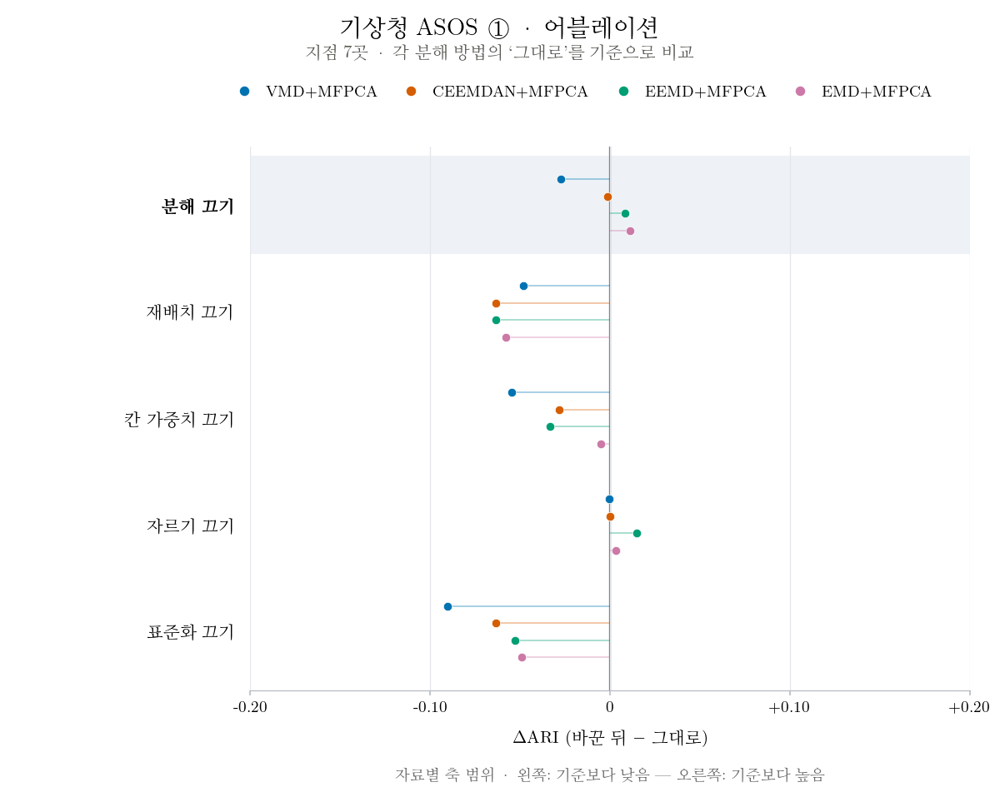
| 바꾼 것 | VMD | CEEMDAN | EEMD | EMD |
|---|---|---|---|---|
| 그대로 | 0.190 | 0.194 | 0.180 | 0.160 |
| 분해 끄기 | 0.192 (+0.002) | 0.192 (-0.002) | 0.192 (+0.012) | 0.192 (+0.032) |
| 재배치 끄기 | 0.171 (-0.019) | 0.021 (-0.173) | 0.026 (-0.154) | 0.030 (-0.129) |
| 칸 가중치 끄기 | 0.168 (-0.022) | 0.151 (-0.042) | 0.118 (-0.062) | 0.153 (-0.006) |
| 자르기 끄기 | 0.191 (+0.001) | 0.193 (-0.000) | 0.187 (+0.007) | 0.159 (-0.001) |
| 표준화 끄기 | 0.042 (-0.149) | 0.043 (-0.151) | 0.042 (-0.138) | 0.043 (-0.117) |
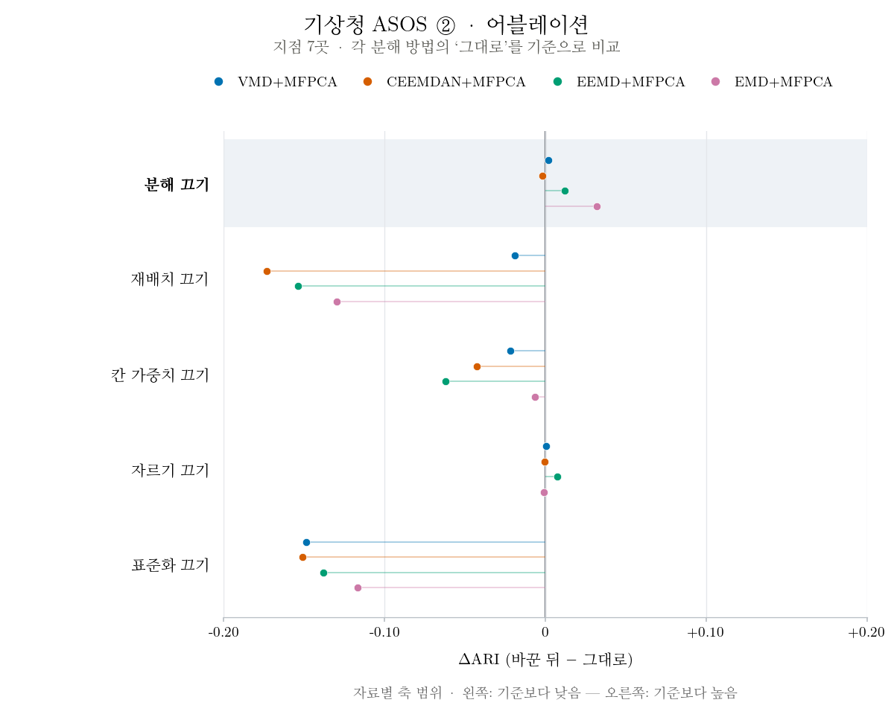
| 바꾼 것 | VMD | CEEMDAN | EEMD | EMD |
|---|---|---|---|---|
| 그대로 | 0.239 | 0.129 | 0.271 | 0.177 |
| 분해 끄기 | 0.253 (+0.014) | 0.253 (+0.124) | 0.253 (-0.017) | 0.253 (+0.076) |
| 재배치 끄기 | 0.230 (-0.010) | 0.219 (+0.090) | 0.211 (-0.059) | 0.110 (-0.067) |
| 칸 가중치 끄기 | 0.241 (+0.002) | 0.033 (-0.096) | 0.255 (-0.016) | 0.145 (-0.032) |
| 자르기 끄기 | 0.240 (+0.001) | 0.129 (-0.000) | 0.267 (-0.004) | 0.125 (-0.052) |
| 표준화 끄기 | 0.220 (-0.020) | 0.204 (+0.075) | 0.223 (-0.048) | 0.178 (+0.000) |
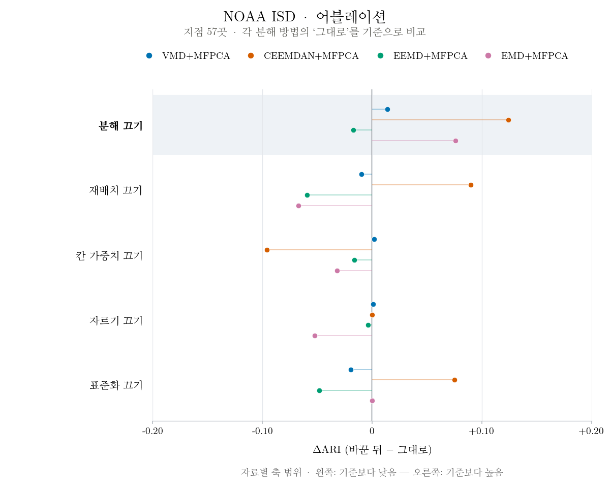
- 그대로: 분해 성분을 느린 변동까지 모두 (VMD 는 DC 모드, EMD 계열은 마지막 잔차) → 주기 칸 → MFPCA → k-means. 하루 평균은 더하지 않음
- 분해 끄기: 분해 없이 원곡선 FPCA (= 3절 FPCA, 네 열 같음)
- 재배치 끄기: 주기 칸 대신 성분을 그대로 MFPCA
- 칸 가중치 끄기: 칸 가중치를 모두 1
- 자르기 끄기: 성분을 에너지 99 % 에서 자르지 않고 전부
- 표준화 끄기: 점수를 표준화하지 않고 k-means
계산 — 지점마다 통째 신호를 분해한 뒤 오라클 · FPCA · 분해+MFPCA 를 돌림 (R, 리포트 1 과 같은 코드 · 261014_하모니_실자료전체.R · 어블레이션 261014_하모니_어블레이션.R). 3절 그림 261014_아리아_실자료4x7그림.py --tag 교수님라벨_전지점 (아리아). 지도 밑그림은 Natural Earth (world-atlas 2.0.2 · us-atlas 3.0.1).